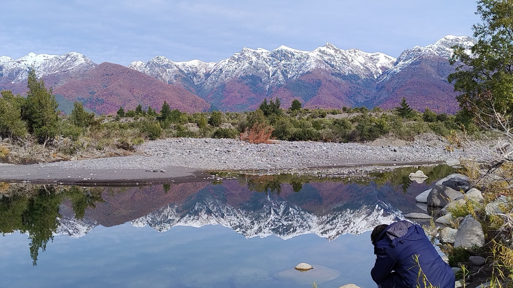
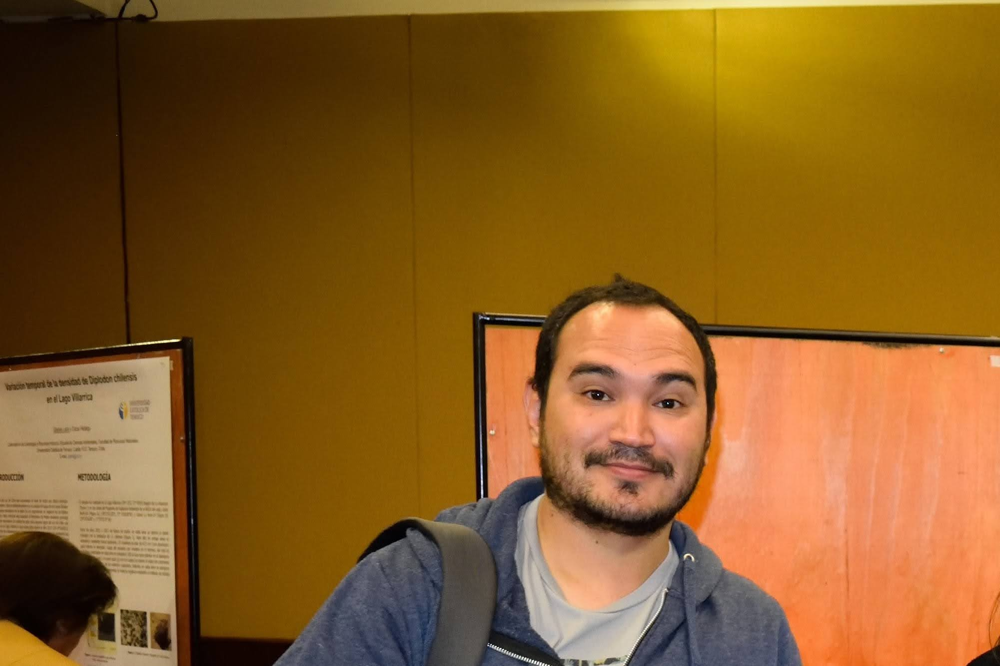
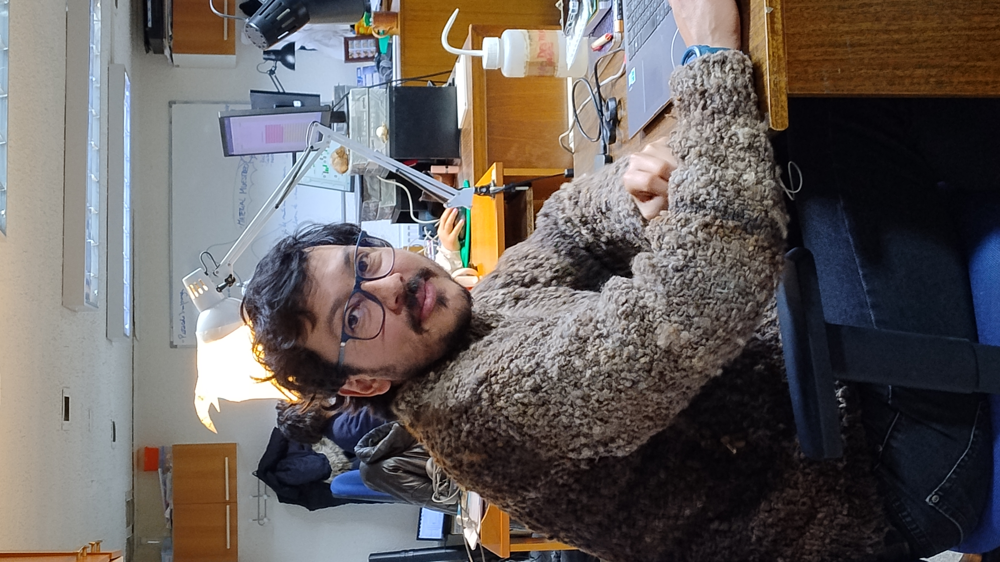
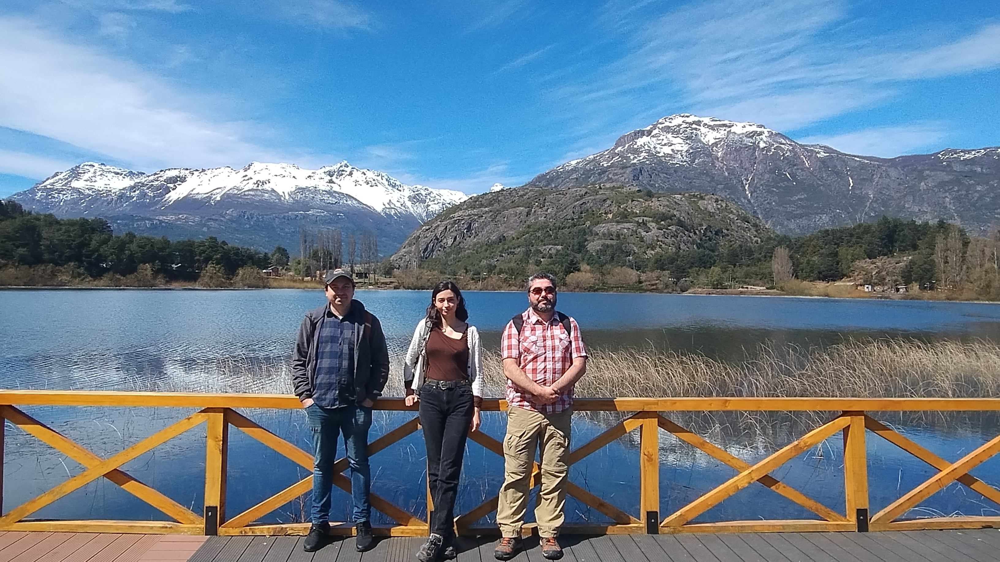
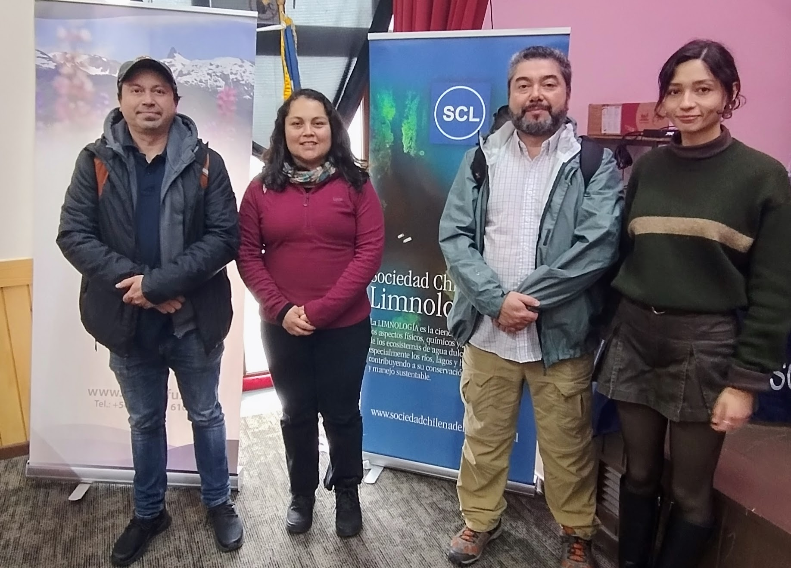
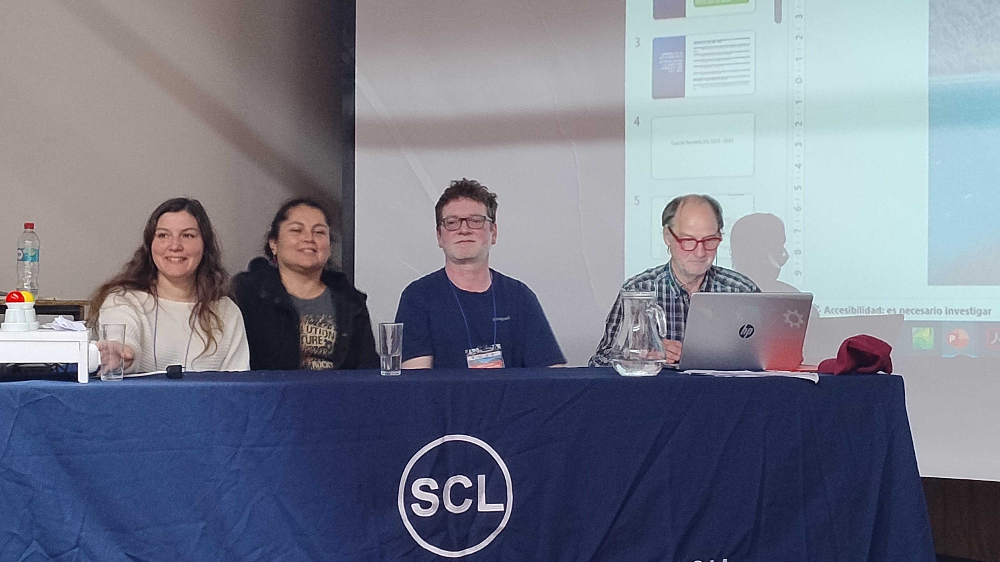
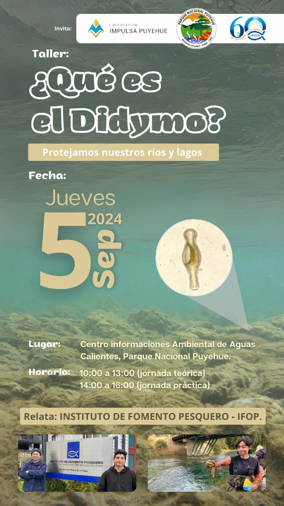

Introduccion

Mapa de los lagos muestreados en el Sur de Chile y que tienen actividad acuicola
GISAC nace de la conjugación de 2 programas de estudio en sistemas de aguas continentales de Chile. El primero sobre el estado ambiental de lagos donde se dearrolla la auicultura en el sur de Chile y el segundo un programa de monitoreo de la especie plaga Didymo que invade los rios y lagos de nuestro país.
Ambos programas de monitoreo son independientes pero se entrelazan en su desarrollo. Si quieres saber mas de lagos Pincha Aqui y si quieres saber mas de Didymo Pincha Aqui.
Lagos

Playa de Llifén, Lago Ranco, Chile
El proyecto “Evaluación del estado ambiental de los lagos utilizados con actividades de acuicultura en la zona sur de Chile”, es un programa de estudio que nació para obtener información actualizada del estado ambiental y capacidad de carga de los lagos donde se desarrolla la actividad de acuicultura en balsas jaula dentro de los lagos, ésto dado que la Ley General de Pesca y Acuicultura (LGPA) y sus resoluciones acompañantes, mandatan que los sistemas acuáticos donde se realice acuicultura deben encontrarse en equilibrio ecológico, sin sobrepasar la capacidad de carga del lago y con buenas condiciones de oxígeno. La acuicultura en los lagos de Chile se centra en el cultivo de salmónidos, el ciclo de vida de estos peces incluye etapas de cultivo que requieren de agua dulce. Esta actividad se está realizando en los lagos del sur de Chile aproximadamente desde los años 80´s. Se debe considerar también que hasta antes de la ejecución de este estudio, las evaluaciones ambientales de estos lagos generalmente estaban dadas por estudios esporádicos, lo cual no permitía darle un seguimiento a la evolución de la calidad ambiental. Por ello la importancia del desarrollo de este programa de estudio que desde el año 2012 ha estado evaluando ambientalmente estos lagos.
La red de monitoreo del programa de estudio comprende el muestreo anual de los lagos Araucanos: Ranco, Puyehue, Rupanco, Llanquihue y Chapo; los lagos Chilotes: Cucao - Huillinco, Natri, y Tarahuin; y de los lagos Patagónicos: Yelcho y Riesco. En ellos se realiza un monitoreo estival, y adicionalmente un monitoreo mensual del lago Llanquihue. Se hace énfasis en el estudio del lago Llanquihue, ya que se le considera altamente vulnerable a la eutroficación, debido a sus múltiples servicios ecosistémicos, y al largo tiempo de renovación de sus aguas. Se estima como prioritario el estudio continuo del lago Llanquihue, de modo que sea posible comprender de mejor forma el funcionamiento de este ecosistema.
Si quieres ver graficos de las varables ambientales y la ubicacion de las estaciones de muestreo de lagos, Pincha Aqui.
Galería de Videos
Didymo

Muestreo de Didymo en Antuco, Chile
En esta pagina, encontrara informacion del estudio sobre la plaga Didymosphenia geminata en ecosistemas acuáticos de Chile, cubre el progreso entre septiembre de 2023 y julio de 2024. Durante este período, se realizaron dos campañas de monitoreo y prospección en distintas regiones, muestreando estaciones para recolectar microalgas, macroinvertebrados y agua para análisis de nutrientes. Los análisis de fitoplancton y fitobentos están completos, mientras que los análisis de macroinvertebrados y agua aún están en proceso. Si quieres saber mas Pincha Aqui.
Galería de Videos
Integrantes del Grupo
En esta pagina, encontraras informacion sobre los integrantes del Grupo de Investigacion de Sistemas de Aguas Continentales. Si quieres saber mas Pincha Aqui.

Claudia Perez S. y Carolina Rösner O.

Rodrigo Vera S.

Rodrigo Jaramillo T.

Alejandra Oyanedel.

David Opazo.
Paula Ramirez.
Mario Ortiz.

Nicole Pesse L.

Gonzalo Calderon
Noticias

Congreso de Limnología 2024, Futaleufú, Laguna Espejo de fondo. Rodrigo Jaramillo, Paula Ramirez y Rodrigo Vera S.

Congreso de Limnología 2024, Futaleufú, Delegacion de IFOP. Rodrigo Jaramillo, Alejandra Oyanedel, Rodrigo Vera S., Paula Ramirez.
Entre los días 7 y 11 de octubre se desarrolló el XVII Congreso de la Sociedad Chilena de Limnología “Conectando Ciencia y Sociedad”, en la ciudad de Futaleufú, Provincia de Palena, Región de Los Lagos. En esta oportunidad el congreso fue organizado por la Municipalidad de Futaleufú, Universidad Austral, Universidad de Los Lagos, CIEP y el Instituto de Fomento Pesquero. La instancia reunió a investigadores de las ciencias limnológicas (aguas continentales) de Chile y Argentina donde se abordaron temáticas atingentes al conocimiento ecológico, hidrológico, conservación, bioseguridad y la relación existente con las comunidades que habitan en las cuencas hidrográficas. El Instituto de Fomento Pesquero tuvo una destacada participación en la versión 2024 de este congreso, en el que se mostraron resultados de los dos programas de monitoreo que, a través del financiamiento entregado por la Subsecretaría de Pesca y Acuicultura, generan información relevante para la toma de decisiones en ecosistemas de agua dulce donde existen actividades de acuicultura.
Los investigadores e investigadoras del Departamento de Medio Ambiente de la División de Investigación en Acuicultura se refirieron a temáticas relacionadas con las variaciones en la concentración de nutrientes y trofía en lagos y a algunos aspectos ecológicos y de bioseguridad de la especie plaga Didymospyhenia geminata.
El investigador Rodrigo Vera S. presento resultados relacionados con la trofía de los lagos con acuicultura del sur de Chile y que son la reserva de agua dulce del mundo. Lagos como el Puyehue, Yelcho y Riesco presentan una tendencia al alza de la concentración de nutrientes en la columna de agua durante estos últimos 11 años. Índices como el TLI (índice trófico para lagos de Nueva Zelanda) muestran esta misma tendencia. Usando Machine learning (Random Forest) y usando como referencia el TLI, se crea un Nuevo índice Trófico para lagos de Chile (ITLC) basado solo en nitrógeno total, Clorofila-a y transparencia del agua y que puede servir de semáforo para la toma de decisiones.
El investigador Rodrigo Jaramillo presento el trabajo relacionado con el potencial de invasión del alga plaga D. geminata en el sur de Chile. El estudio hizo una revisión de los datos disponibles en el proyecto de monitoreo de D. geminata y los proyecto a través de modelos para evaluar los posibles cambios de temperatura hacia el 2040, considerando el impacto del cambio climático. Las variables fisico-quimicas obtenidas de 8 años de muestreos fueron rasterizadas y utilizadas como predictores del modelo, teniendo como resultado escenarios de cambio en la distribución potencial de D. geminata en Chile. Este trabajo puede dar nuevas luces sobre como los cambios en la distribución de D. geminata pueden afectar el uso de los sistemas riparianos en ese contexto y enfatizar la importancia de la Bioseguridad como método efectivo de prevención.
La investigadora Paula Ramírez, expuso parte de los resultados obtenidos dentro de los objetivos que se llevan a cabo en el Programa de Monitoreo, prospección e investigación de Didymo. En este trabajo se evaluó la adherencia de D. geminata en diferentes vadeadores de pesca recreativa, comparando telas, profundidades dentro de la columna de agua y partes del vadeador. Los experimentos realizados en diferentes ríos de la Patagonia indican que los vadeadores de pesca fabricados con neopreno retienen una mayor cantidad de células de Didymo y la parte del vadeador que captura mayor número de células es la suela al estar en contacto directo con las floraciones de Didymo. Estos hallazgos son relevantes para el desarrollo de estrategias de mitigación en la dispersión de esta especie plaga.
La investigadora Alejandra Oyanedel Pérez participó en el simposio “Consciencia fluvial: iniciativas territoriales y gobernanza para la protección de ríos y otros humedales” donde se refirió a los principales resultados obtenidos en los 8 años de monitoreo de la especie plaga Didymosphenia geminata, destacando la prevalencia de las floraciones y la pérdida de diversidad bentónica en ríos de la Patagonia, valoración social y económica de los efectos de esta especie plaga y potenciales aportes a los procesos de gobernanza local. Adicionalmente, Alejandra Oyanedel fue elegida Secretaria de la Sociedad Chilena de Limnología en el periodo 2024-2026, conformando la nueva directiva junto a investigadores de la Universidad Austral.

Congreso de Limnología 2024, Futaleufú, Elección de nueva directiva de la Sociedad Chilena de Limnologia 2024-2026. De izquierda a derecha: Nicole Colin, vicepresidenta; Alejandra Oyanedel, Secretaria; Konrad Gorski, Presidente y Stefan Woelfl, Tesorero
Congreso de Limnología 2024, Futaleufú

ACtividad de Difusion de efectos del Didymo en auditorio aguas calientes, Parque nacional Puyehue jueves 5 de septiembre 2024 entre las 10 a 16 hrs
Proyectos
LAGOS
Etapa I Proyecto Lagos
Etapa II Proyecto Lagos
Etapa III Proyecto Lagos
Etapa IV Proyecto Lagos
Etapa V Proyecto Lagos
Etapa VI Proyecto Lagos
Etapa VII Proyecto Lagos
Etapa VIII Proyecto Lagos
Etapa IX Proyecto Lagos
Etapa X Proyecto Lagos
Didymo
Etapa I Proyecto Didymo
Etapa III Proyecto Didymo
Etapa IV Proyecto Didymo
Etapa V_etapa_didymo
Etapa VI Proyecto Didymo
Etapa VII Proyecto Didymo
Galería de Fotos
Galería de Fotos
×
 ❮
❯
❮
❯
Elements
Text
This is bold and this is strong. This is italic and this is emphasized.
This is superscript text and this is subscript text.
This is underlined and this is code: for (;;) { ... }. Finally, this is a link.
Heading Level 2
Heading Level 3
Heading Level 4
Heading Level 5
Heading Level 6
Blockquote
rfvera
Preformatted
i = 0;
while (!deck.isInOrder()) {
print 'Iteration ' + i;
deck.shuffle();
i++;
}
print 'It took ' + i + ' iterations to sort the deck.';
Lists
Unordered
- Dolor pulvinar etiam.
- Sagittis adipiscing.
- Felis enim feugiat.
Alternate
- Dolor pulvinar etiam.
- Sagittis adipiscing.
- Felis enim feugiat.
Ordered
- Dolor pulvinar etiam.
- Etiam vel felis viverra.
- Felis enim feugiat.
- Dolor pulvinar etiam.
- Etiam vel felis lorem.
- Felis enim et feugiat.
Icons
Actions
Table
Default
| Name |
Description |
Price |
| Item One |
Ante turpis integer aliquet porttitor. |
29.99 |
| Item Two |
Vis ac commodo adipiscing arcu aliquet. |
19.99 |
| Item Three |
Morbi faucibus arcu accumsan lorem. |
29.99 |
| Item Four |
Vitae integer tempus condimentum. |
19.99 |
| Item Five |
Ante turpis integer aliquet porttitor. |
29.99 |
|
100.00 |
Alternate
| Name |
Description |
Price |
| Item One |
Ante turpis integer aliquet porttitor. |
29.99 |
| Item Two |
Vis ac commodo adipiscing arcu aliquet. |
19.99 |
| Item Three |
Morbi faucibus arcu accumsan lorem. |
29.99 |
| Item Four |
Vitae integer tempus condimentum. |
19.99 |
| Item Five |
Ante turpis integer aliquet porttitor. |
29.99 |
|
100.00 |


{kind=link}
{kind=link}
{kind=link}